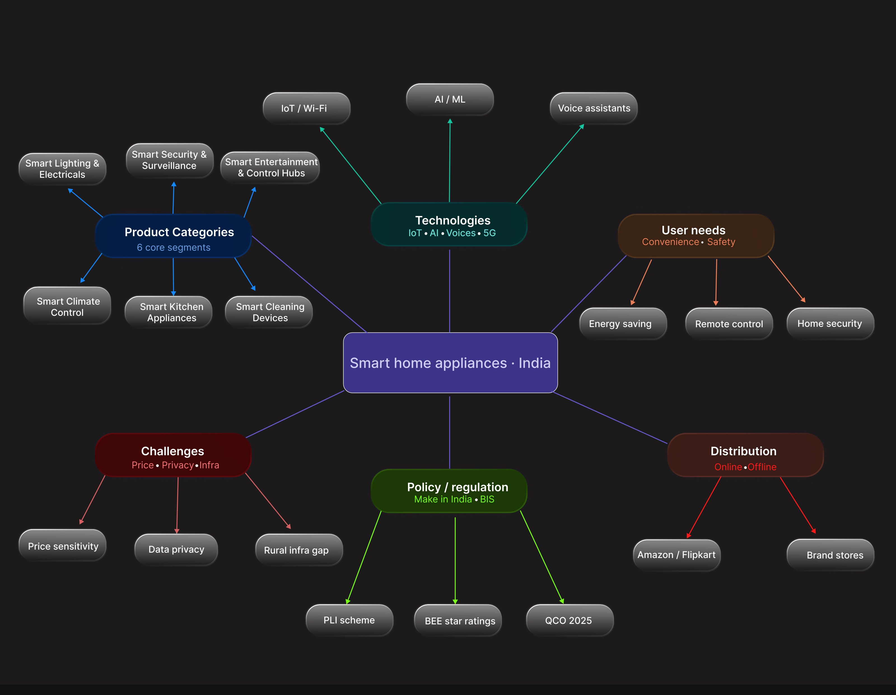
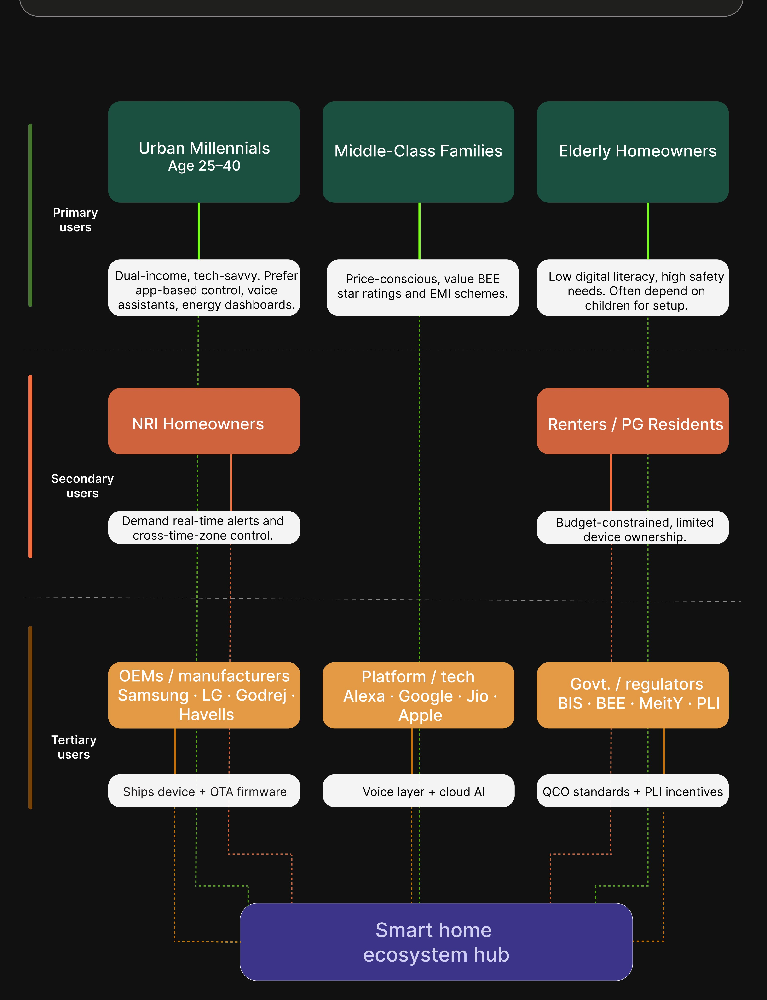
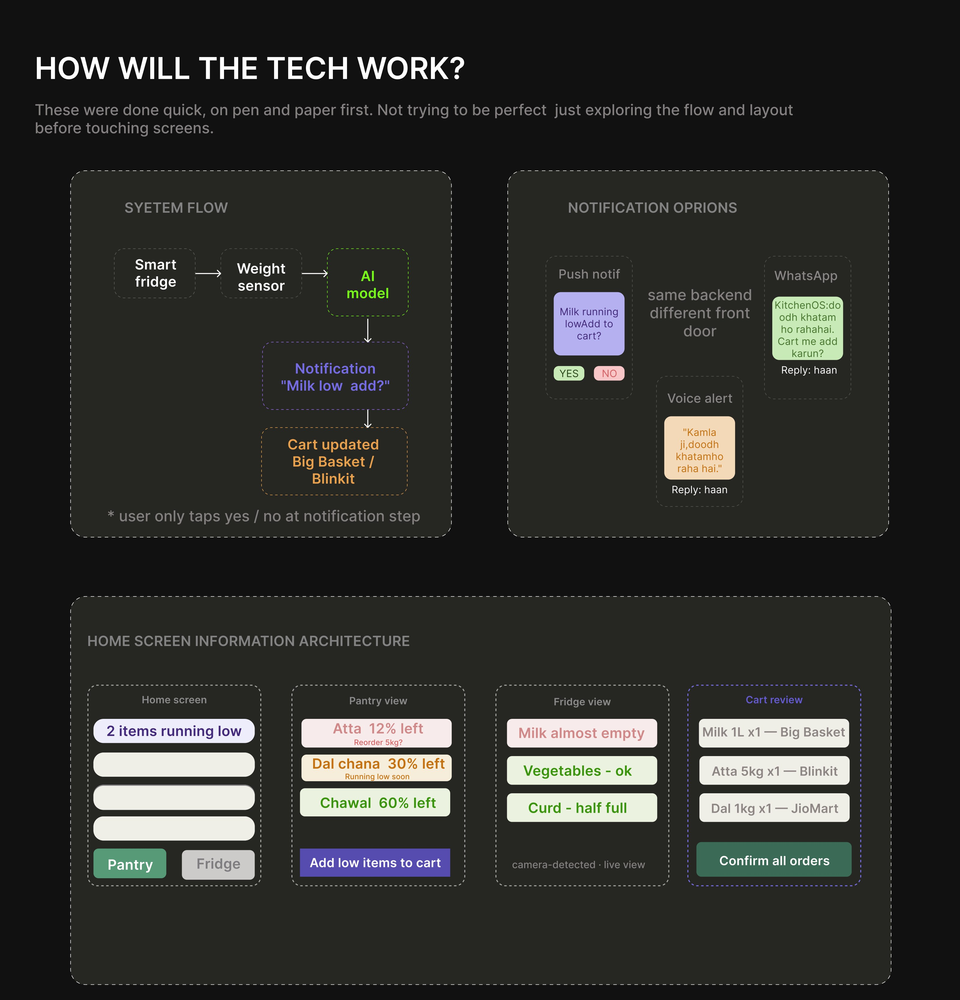

UX case study · Smart home appliances · India
End-to-end design research into smart home appliances for the Indian market. Indians buy connected devices but rarely use what makes them smart. The research led to KitchenOS: an aware kitchen layer that notices what’s running low and asks one question, yes or no.
Domain selection
They sit at the intersection of IoT, AI, consumer behaviour and infrastructure, and in India each of those works differently from the markets these products were first designed for.

Why this domain
Segment share by product · India 2025
Personalised automation, predictive maintenance, energy AI.
Hands-free control in Hindi, Tamil, Bengali and Telugu.
PM Surya Ghar integration, real-time energy visibility.
Designing for elderly, low-literacy and visually impaired users.
Trends & competition
Five growth trends, and a competitive field split into three tiers.
Tier 1 · Global premium
Smart ecosystems, AI-first, premium urban.
Tier 2 · Indian champions
Localisation, PLI, energy efficiency.
Tier 3 · Value & new entrants
Price leadership, mass market, D2C.
| Brand | Origin | Smart platform | Key product (India 2025) | Strategic focus |
|---|
Stakeholders
Primary users live with the devices; secondary users have specific, narrower needs; tertiary stakeholders ship, power and regulate the ecosystem.

Primary
From app-first and voice-savvy, to price-conscious and EMI-driven, to low digital literacy and dependent on children for setup.
Secondary
Real-time alerts and cross-time-zone control; budget-constrained with limited device ownership.
Tertiary
Samsung, LG, Godrej, Havells ship devices and OTA firmware; Alexa, Google, Jio, Apple run the voice and cloud layer; BIS, BEE, MeitY set QCO standards and PLI incentives.
Primary research
Ten open-ended questions, answered by five real users across every tier.
All four non-tech users either failed setup or had someone else do it. Nobody completed it alone on the first try.
Ramu and Amit define “smart” as saving electricity, not connectivity. Connectivity alone means little to them.
Kamla’s entire smart home experience is mediated by her son. She has no direct relationship with the product or the brand.
Three of five users waited 5+ days for service. All resolved it through informal networks (a son, a shopkeeper, the village electrician), not brand channels.
Problem statement
What the interviews added up to, written as one problem statement.
Point of view
I met Priya, a busy homemaker in Pune who bought a smart fridge and AC but uses neither app. She never connected them to Wi-Fi and doesn’t know their smart features exist. It made me wonder whether the failure is in the product, or in the experience designed around it.
How might we
Non-tech-savvy smart appliance buyers across urban, semi-urban and rural India.
To use smart features independently, understand energy savings, and get support in their own language.
The appliances work. Setup, support and instructions assume a confident, English-speaking city user.
Core problem statement“Smart home appliance users across India, especially in tier-2 cities, elderly households and low-literacy contexts, cannot independently set up, use, or get help with their connected devices, because the onboarding, interface and support systems are built for a tech-confident urban user that most buyers are not.”
Personas & empathy maps
Composite personas built from interview data, each with a distinct tier and mental model, and empathy maps showing the gap between outward behaviour and inner experience.
Journey & systems
The workflow across physical, digital, human and environmental touchpoints, and where it breaks.
Physical
Device controls, LED indicators, printed manuals, in-store displays.
Digital
Brand apps, voice assistants, web dashboards, OTA updates, e-commerce pages.
Human
Sales staff, installation technician, customer care, community forums.
Environment
Smart meter APIs, solar inverter dashboards, router admin panels.
Pain points
3–5 separate apps per household, no unified layer.
Indian accents and regional languages underserved.
The smart premium isn’t justified for tier-2/3 buyers.
Touchscreen-only apps are inaccessible to 60+ users.
68% report concern about data sharing (2025).
| Platform | Capability | Limitation |
|---|---|---|
| Samsung SmartThings | Cross-brand hub, Matter, AI scenes | Locked to Samsung for full features |
| LG ThinQ | AI diagnosis, energy reports, remote | Weak Hindi and regional-language support |
| Mi Home (Xiaomi) | Affordable control, automation routines | Privacy: data routed via Chinese servers |
| Amazon Alexa | Voice control, smart routines | Poor accent recognition for Indian phonetics |
| Reliance JioBrain | AI platform, 5G-native, pan-Jio | Early-stage; limited third-party device support |
| BEE Star Rating | Mandatory energy grading for ACs, fridges | Static label; no real-time energy reporting |
Environmental
Ethical
Accessibility
Gap analysis
Uncovered through ecosystem analysis across usability, accessibility, efficiency, trust and cognitive load, each grounded in field evidence. Filter by type.
Core problem, restated“Indian smart home appliance users invest in connected devices yet rarely use the smart features. The hardware is fine; finding, setting up, using and getting help with those features is scattered across apps and hard to follow. The result is a ₹4,500 crore market of unused smart features.”
Emerging technology
Three time horizons: how the technologies work, their current limits, adoption challenges, and the ethical and social implications for India.
Ideation
Starting from the gaps (energy data is invisible, setup is too hard, users don’t see value), these are the raw ideas generated before narrowing to one solution.
Priya never knows milk is low until it’s gone.
Amit opens 3 apps to reorder the same groceries.
Kamla depends on her son for everything, even restocking.
Scans shelves and detects low stock every time the door opens.
Pads under containers trigger a reorder below a threshold.
Scan items out as they’re used. Manual, but light.
“Rohan buys milk every 5 days”, so order before it runs out.
“Kamla, milk is low. Add it to your Big Basket list?” Yes or no.
Reorder by message. No app install for tier-2 users.
Weight sensors for pantry staples (dal, rice, atta) plus a camera for fridge items. A full picture without barcode work.
It detects and suggests; the user just taps approve. No inventory management, no lists.
Solution
A connected layer across fridge, pantry and grocery apps. Devices sense what’s low. The system suggests. The user taps yes or no.
Same backend, different front door
The user only ever taps yes or no at the notification step. The channel matches who they are.
Devices in scope
Smart fridge (camera model) · pantry weight sensors · connected containers for dal, atta and rice · smart water purifier.
Platforms connected
Amazon Fresh / Big Basket · Blinkit / Zepto for quick delivery · JioMart for tier-2 reach · WhatsApp as the no-app channel.
Who benefits most
Priya never runs out mid-cook · Kamla’s son gets an alert and stocks her home · Amit gets a Hindi WhatsApp flow · Rohan is fully automated.

Back to
Portfolio→